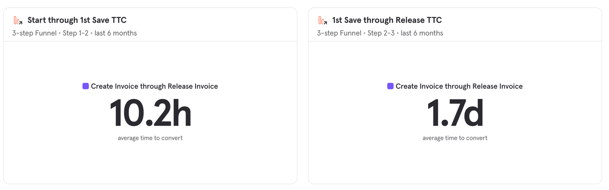
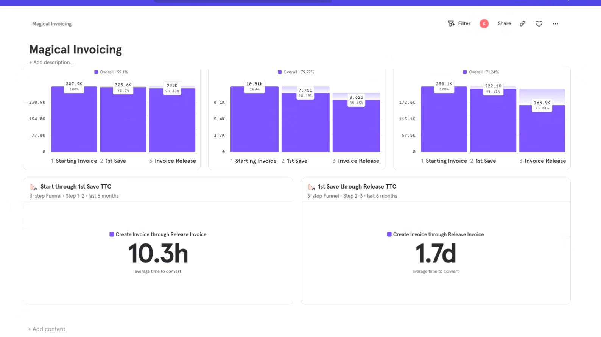
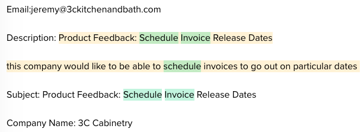
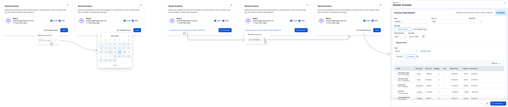
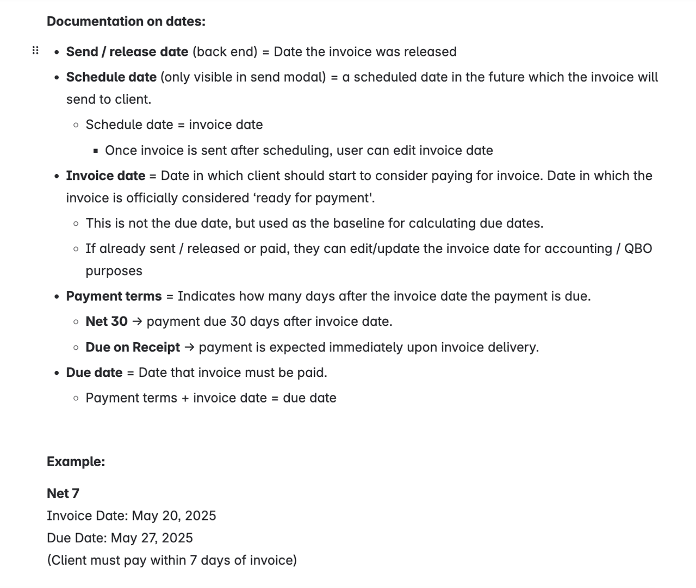
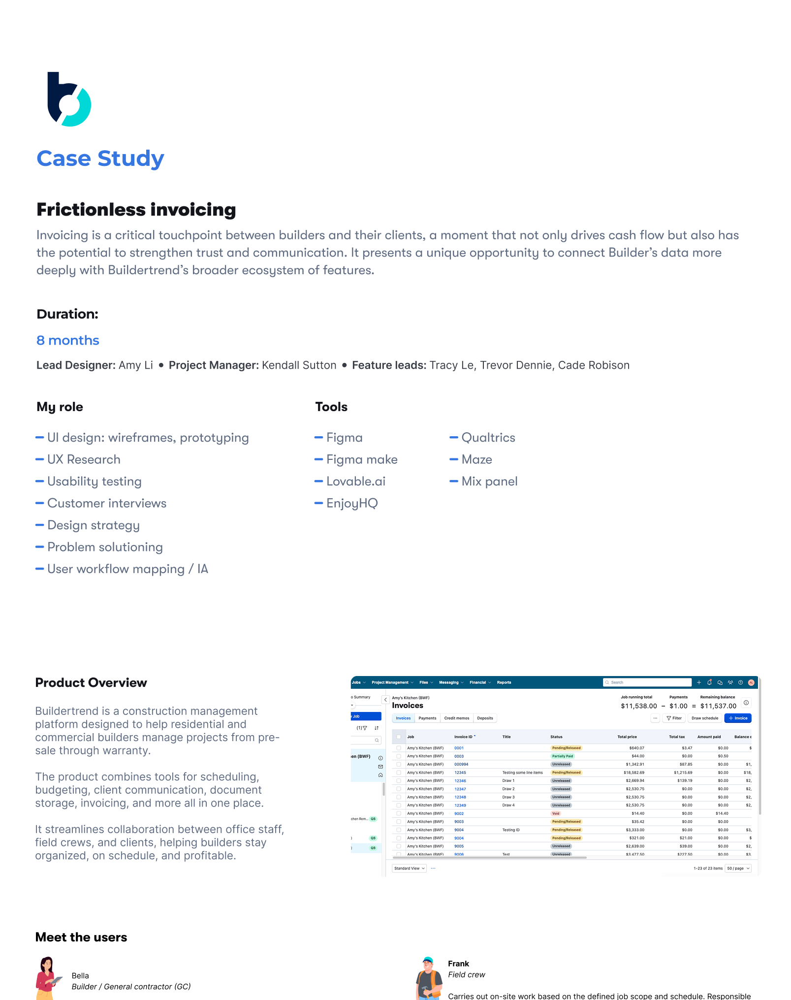
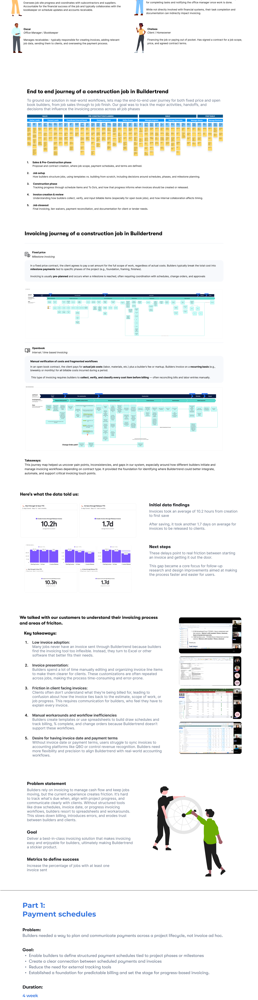
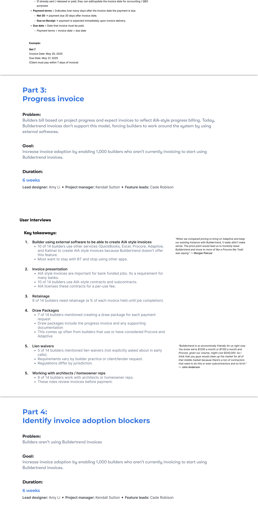

Frictionless invoicing
Invoicing is a critical touchpoint between builders and their clients. It drives cash flow, but also has the potential to strengthen trust and communication, and to connect a builder's data more deeply with Buildertrend's broader ecosystem.
Product overview
Buildertrend is a construction management platform for residential and commercial builders to manage projects from pre-sale through warranty. It combines scheduling, budgeting, client communication, document storage, invoicing, and more in one place so office staff, field crews, and clients stay aligned.

Meet the users
Bella, Builder / GC
Oversees job-site progress and subcontractors. Accountable for the job's financials and collaborates with the bookkeeper on schedule updates and receivables.
Frank, Field crew
Completes on-site work against the defined scope and schedule. Not directly involved with financials, but task completion and documentation indirectly drive invoice timing.
Oscar, Office Manager / Bookkeeper
Manages receivables. Creates invoices, adds relevant job data, sends them to clients, and oversees the payment process.
Chelsea, Client / Homeowner
Financing the job or paying out of pocket. Has signed a contract for scope, price, and agreed terms.
End-to-end journey of a construction job
To ground the solution in real workflows, we mapped the end-to-end user journey for both fixed-price and open-book builders, from job sales through job finish. The goal: track the major activities, handoffs, and decisions that influence invoicing across every phase.

- Sales & Pre-Construction: proposal and contract creation, where scope, payment schedules, and terms are defined.
- Job setup: how builders structure jobs (templates vs. building from scratch), including schedules, phases, and milestone planning.
- Construction: tracking progress through schedule items and To Do's, and how that progress informs when invoices should be created or released.
- Invoice creation & review: how builders collect, verify, and input billable items (especially for open-book), and how internal collaboration affects timing.
- Job closeout: final invoicing, lien waivers, payment reconciliation, and documentation for client or lender needs.
Invoicing journey by contract type
Fixed price (milestone invoicing)
In a fixed-price contract, the client agrees to pay a set amount for the full scope of work, regardless of actual costs. Builders typically break the total into milestone payments tied to specific phases (foundation, framing, finishes). Invoicing is pre-planned and happens when a milestone is reached, coordinated with schedules, change orders, and approvals.

Open book (interval / time-based invoicing)
In an open-book contract, the client pays for actual job costs (labor, materials) plus a builder's fee or markup. Builders invoice on a recurring basis (biweekly or monthly) for billable costs incurred during that period. This requires builders to collect, verify, and classify every cost item before billing, often reconciling bills and labor entries manually.

Takeaways
The journey map surfaced pain points, inconsistencies, and gaps in how different builders initiate and manage invoicing depending on contract type. It became the foundation for identifying where Buildertrend could better integrate, automate, and support critical invoicing touch points.
Here's what the data told us
Initial data findings
- Invoices took an average of 10.2 hours from creation to first save.
- After saving, invoices took another 1.7 days on average to be released to clients.
These delays point to real friction between starting an invoice and getting it out the door. Closing that gap became the core focus for follow-up research and design.


What builders told us
We talked with customers to understand their invoicing process and where the friction lives. Five themes surfaced across every conversation.
- Low invoice adoption. Many jobs never have an invoice sent through Buildertrend because the tool feels too inflexible. Builders turn to Excel or other software that better fits their workflow.
- Invoice presentation. Builders spend a lot of time manually editing and organizing line items to make them clearer for clients. The same customizations get repeated across jobs, which is time-consuming and error-prone.
- Friction in client-facing invoices. Clients often don't understand what they're being billed for. They can't connect the invoice back to the estimate, scope, or job progress, so builders have to explain every one.
- Manual workarounds. Builders build draw schedules and track billing, % complete, and change orders in spreadsheets because Buildertrend doesn't support those workflows.
- Invoice date and payment terms. Without a real invoice date or payment terms, users can't sync cleanly to accounting platforms like QBO or control revenue recognition. Builders need flexibility to align Buildertrend with real-world accounting workflows.


Problem statement
Builders rely on invoicing to manage cash flow and keep jobs moving, but the current experience creates friction. It's hard to track what's due when, align billing with project progress, and communicate clearly with clients. Without structured tools like draw schedules, invoice date, or progress-invoicing workflows, builders resort to spreadsheets and workarounds. That slows billing, introduces errors, and erodes trust.
Goal
Deliver a best-in-class invoicing solution that makes invoicing easy and enjoyable for builders, ultimately making Buildertrend a stickier product.
Success metric
Increase the percentage of jobs with at least one invoice sent.
Payment schedules
Problem. Builders needed a way to plan and communicate payments across a project lifecycle, not invoice ad hoc.
Goals:
- Enable builders to define structured payment schedules tied to project phases or milestones.
- Create a clear connection between scheduled payments and invoices.
- Reduce the need for external tracking tools.
- Establish a foundation for predictable billing and set the stage for progress-based invoicing.
Invoice date & schedule release
Problem. Invoice date represents when the work on that invoice was completed and, combined with payment terms, calculates the due date. Buildertrend has a couple of fields (Release date, Created date) that builders tried to use as the invoice date, but they aren't editable and don't sync to accounting. That breaks record-keeping and makes it hard to set a correct Due date in BT.

Goal. Allow users to choose a future date for an invoice to be sent automatically. Useful for builders who finalize invoices ahead of time and want to schedule them for delivery on a specific date.
Schedule release of invoice

Multiple teams were updating pieces of the invoicing workflow. To limit change fatigue, we decided on a single release to launch the new Invoice date experience. Things changing together:
- Adding a new invoice date field.
- Invoice date + Payment terms = Due date.
- Invoice date syncing to accounting.
- Linking to a schedule item directly sets the invoice date (rather than the Due date).
- New option to schedule when an invoice is sent/released to the client.
A limited release lets us run a single GTM motion instead of piecemeal rollouts, which would force retraining moments in quick succession. It also lets us collect feedback on the happy path and on each individual piece as we build.
Considerations
Release date / Due date dependencies
- Sending/releasing an invoice acts as both making it visible to the client and formally requesting payment (Release date).
- Release date plus Payment term sets the Due date.
- Linking invoices to schedule items sets the invoice due date based on the schedule item dates.
At-bats vs. change management
We can and will break this into the smallest releases possible, but given the impact of invoice date on both Payment terms and Schedule-item links, we need to avoid too many invoice-workflow changes in a short window. It also may not make sense to keep two ways of calculating the Due date once the Invoice date is introduced.

Appendix: full visual case study
Expand each section to see the full design document.
Overview & users

Journey, research, and problem (full document)

Part 1: Payment schedules (full document)

Part 2: Invoice date & schedule release (full document)
